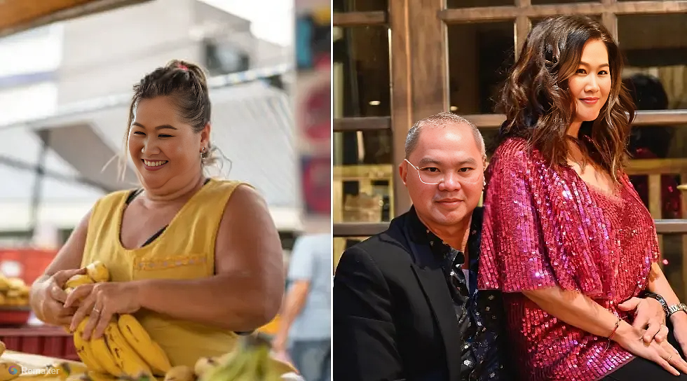

Wanita ini hanya bekerja di pasar sepanjang hidupnya, menjual buah-buahan dengan penghasilan tak tetap. Namun pada usia 50 tahun, Rina Lusia menurunkan 30 kg berat badannya, sehingga terlihat 10 tahun lebih muda dan menikahi seorang miliader. Simak bagaimana ia bisa mendapatkannya?
Di usia 50 tahun, Rina Lusia hidup dalam rutinitas yang membosankan. Setiap hari, ia menjual buah di pasar tradisional kecil di Indonesia untuk mencukupi kebutuhan hidup. Beban hidup dan berat badannya yang lebih dari 100 kilogram membuatnya kehilangan harapan untuk masa depan.
“Siapa yang peduli dengan wanita gemuk dan biasa saja seperti saya?” Rina sering berpikir seperti itu.
Sampai suatu hari, melalui kesempatan yang tak terduga, ia bertemu dengan Andi Rukmana, seorang pengusaha kaya raya pemilik hotel di Singapura.
Rina dan Andi bertemu melalui aplikasi kencan dan dengan cepat menjadi dekat. Kebaikan dan perhatian Andi membuat Rina merasa nyaman, dan ketulusan Rina berhasil menyentuh hati Andi. Dua bulan kemudian, Andi memutuskan untuk terbang ke Indonesia untuk bertemu dengannya secara langsung. Hal ini seharusnya menjadi momen bahagia, tetapi Rina malah diliputi kecemasan.
“Bagaimana jika dia melihat saya yang sebenarnya dan kecewa?” Melihat bayangan dirinya di cermin, Rina memutuskan: Dia harus berubah!
Rina mulai mencari cara untuk menurunkan berat badan dengan cepat dan sehat. Setelah mencoba berbagai metode, ia menemukan cara alami yang membuatnya tidak perlu kelaparan atau melakukan olahraga berat, tetapi tetap dapat mencapai tujuannya.
Dalam waktu hanya satu bulan, ia berhasil menurunkan 25 kilogram! “Kulit saya lebih kencang, dan garis-garis penuaan di wajah saya mulai memudar. Saya tidak pernah membayangkan bahwa di usia 50 tahun, saya bisa terlihat 10 tahun lebih muda!” Teman-temannya sulit percaya dan bahkan mengira Rina menjalani prosedur kecantikan mahal.
Pada hari pertemuan mereka, Andi terpesona oleh perubahan Rina. Dia merasa Rina lebih cantik daripada di foto. Keduanya segera jatuh cinta, dan sebulan kemudian, mereka menikah dalam upacara romantis di sebuah vila tepi pantai.
Sekarang, Rina tinggal di sebuah rumah mewah di Miami, menjalani kehidupan yang penuh kebahagiaan dan kemewahan. Dia berkata: “Saya tidak pernah menyangka bahwa di usia 50 tahun, saya masih memiliki kesempatan seperti ini.”
Rina membuktikan bahwa setiap orang bisa berubah, tidak peduli usia atau latar belakangnya.
“Ingin tahu rahasia transformasi Rina? Klik tombol di bawah untuk mempelajari lebih lanjut!”